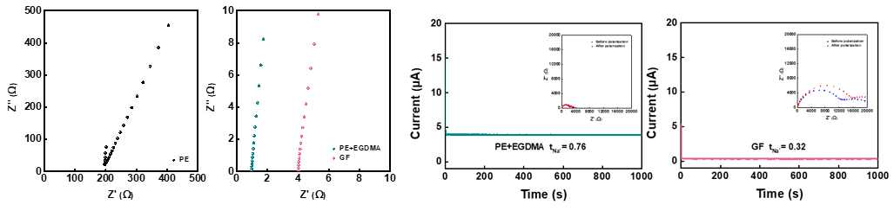

iCVD-Based Surface Modification of Polyolefin Membranes for Electrochemical Devices URP
iCVD(Initiated Chemical Vapor Deposition) 박막 증착 공정을 활용해 폴리올레핀계 분리막 표면에 극성 고분자를 도입, 전해질 젖음성과 이온전도도를 개선하는 학부생 연구 프로그램(URP)입니다.
개요
연구 제목은 "iCVD 기반, 폴리올레핀계 분리막 개질 및 전해질 젖음성 향상"으로, 나트륨 배터리용 분리막의 근본적 한계를 극복하기 위해 iCVD 공정으로 분리막 표면에 극성 고분자를 도입하는 연구입니다.
연구 배경
전기차 수요 증가와 리튬 가격 상승으로 나트륨 배터리가 대안으로 떠오르고 있지만, 나트륨 배터리는 에너지 밀도가 낮다는 근본적인 한계를 가지고 있습니다. 이 단점은 특히 두껍고 무거운 glass fiber 분리막을 사용할 경우 더욱 부각되기 때문에, 이를 대체할 수 있는 분리막 도입이 요구되었습니다.
연구 목적
상업용 폴리올레핀계 분리막은 무극성 특성으로 인해 현재 상용 전해질에 사용되는 극성 용매(ethylene carbonate, propylene carbonate)와의 습윤성이 매우 낮습니다. 이를 개선하기 위해 저온 및 무용매 조건에서 균일한 박막 증착이 가능한 iCVD(Initiated Chemical Vapor Deposition) 공정을 활용해, 분리막 표면 및 내부에 극성기를 함유한 고분자를 도입할 계획입니다. 이를 통해 전해질 젖음성뿐 아니라 율속(rate) 특성도 함께 향상될 것으로 예상했습니다.
접근 방법
- 극성 고분자 도입/미도입된 분리막 간의 전해질 접촉각 및 나트륨 이온전도도 비교분석 진행
- 분리막 간의 Na⁺ ion transference number 및 율속 특성 비교분석 진행
- 코팅 시간에 따른 두께 최적화를 위해, 위 1·2번 과정을 재진행
연구 결과
- 일반 PE 분리막은 전해질과의 습윤성이 매우 낮아, 이온전도도 측정 자체가 되지 않는 것을 확인함
- 이를 해결하기 위해 iCVD로 EGDMA(Ethylene Glycol Dimethacrylate)를 선택해 도입 — 전해질과 친화성이 좋고, 풍부한 극성 ester group이 Na⁺의 탈용매화를 촉진할 것으로 판단
- 실제 이온전도도 측정 결과, PE+EGDMA 분리막은 일반적으로 쓰이는 Glass Fiber보다 향상된 이온전도도를 보임
- Na⁺ transference number 역시 PE+EGDMA가 0.76으로, Glass Fiber(0.32) 대비 크게 증가 — 풍부한 ester group이 Na⁺ 수송에 기여했음을 시사

배운 점
- 배터리 성능을 소재(분리막) 관점에서 개선하려면, 재료의 화학적 특성(극성)이 전해질과의 상호작용에 어떻게 영향을 주는지부터 규명해야 한다는 접근 방식을 배웠습니다
- iCVD처럼 저온·무용매 공정이 필요한 이유(기존 습식 코팅 대비 분리막의 다공 구조·기계적 물성을 보존)를 조사하며 공정 조건이 소재 설계에 미치는 제약을 이해했습니다
- 접촉각·이온전도도 같은 단일 지표만으로 성능을 판단하지 않고, transference number·율속 특성까지 단계적으로 검증하도록 설계한 연구 흐름에서 가설 검증을 위한 실험 설계 방법을 배웠습니다